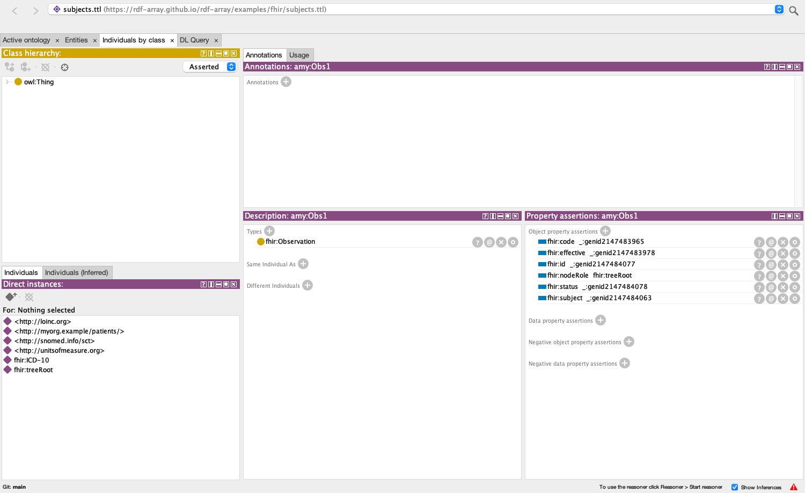
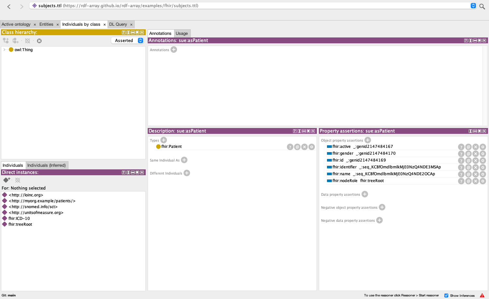
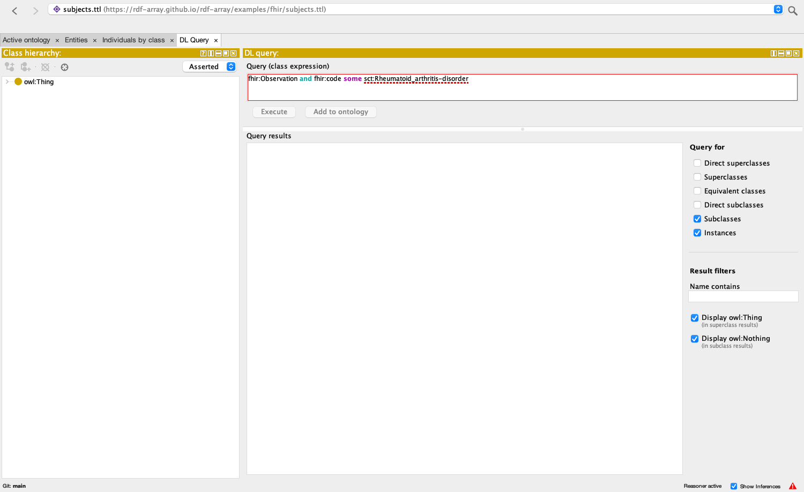
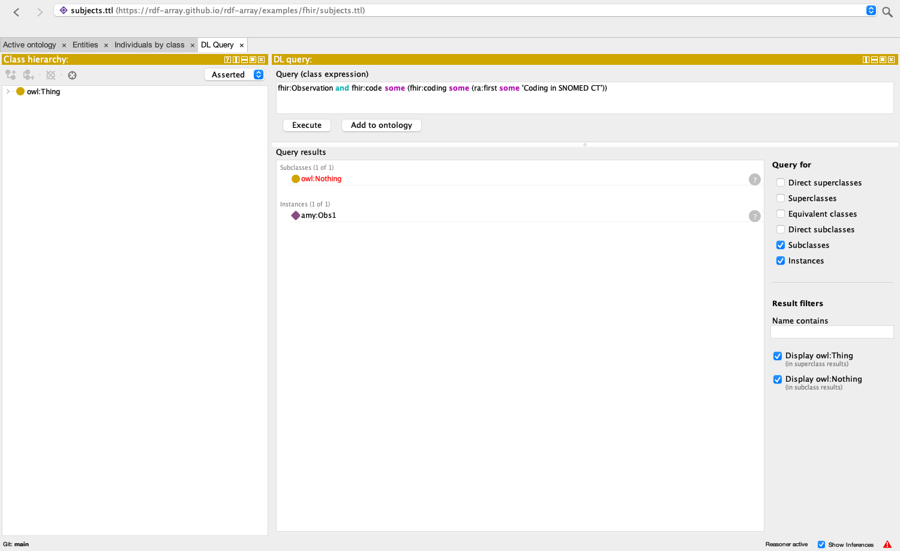
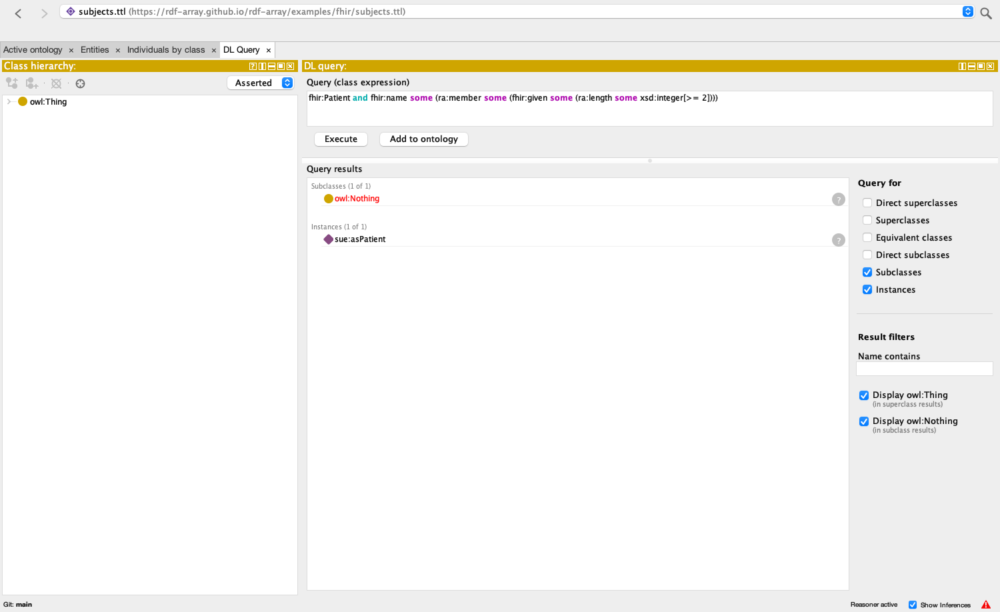

The 2016 talk classified FHIR observations by what they are observations of: define a class of codings by system and code, connect it to a SNOMED CT concept, and let SNOMED CT's hierarchy answer "which observations are of an arthritis?". FHIR RDF has changed since: an element's literal is fhir:v, a uri also carries fhir:l, the IRI, a repeated element such as CodeableConcept.coding is an RDF list ( … ), and a CodeableConcept may carry the concept IRIs of its codings as rdf:type arcs. The list is the problem for OWL: FHIR's own RDF page warns that RDF lists "cause problems for OWL 2" and offers a conversion script. Read over rdf-array the list is one term, and OWL-array gives a class expression a way into it, fhir:coding some (ra:member some C), so the 2016 process runs on today's data unchanged in spirit: recognizers over the codings in the list, connective tissue to SNOMED CT, DL queries over the hierarchy.
This is a working document of the rdf-array project, generated from examples/fhir/README.md by md-to-respec.py in the same repository. It is not a W3C document and has no standing anywhere.
Example, 2026-10-27. The process of Semantic Representations of Clinical Care Data Leveraging HL7 FHIR (Solbrig and Prud'hommeaux, SWAT4LS, 4 December 2016) over the FHIR RDF of today, which writes a repeated element as a list, with OWL-array to look into the list. Run through owlapi-array and HermiT (every query below answers as expected), and in Protégé 5.6.9 with owlapi-array's bundle and the protege-owl-array reasoner plugin, whose DL Query tab lists the same answers (§4). The sources are examples/fhir in the rdf-array meta-repository.
| File | What it is |
|---|---|
subjects.ttl | the root: imports the three subjects. Open this one. |
subject-amy.ttl, subject-bob.ttl, subject-sue.ttl | a Patient and an Observation each, in today's FHIR RDF. Amy: rheumatoid arthritis coded in SNOMED CT then ICD-10, with the SNOMED CT concept IRI the generator adds, and a blood pressure of 150/95 with two components. Bob: seronegative rheumatoid arthritis, ICD-10 first and SNOMED CT second, no concept IRI. Sue: seropositive rheumatoid arthritis in ICD-10 only. |
arthritis.ttl | the talk's domain logic: recognizers of codings, connective tissue through the coding list to SNOMED CT concepts, the classes the DL queries ask for, and two more that look at the list itself. |
blood-pressure.ttl | a second domain, after FHIR's compound blood pressure example: components are a list, each with a coding list of its own, and a number to compare. |
fhir-min.ttl | the part of the FHIR ontology (fhir.ttl) the subjects use, with each repeating element typed as a sequence of its element type. Imports the OWL-array vocabulary. |
snomedct_extract_descriptive.ttl, snomedct_extract_base_descriptive.ttl | the SNOMED CT extract of the 2016 talk, unchanged: arthritis and its neighbourhood, with descriptive IRIs (sct:Rheumatoid_arthritis-disorder) and the numeric code as an annotation. |
catalog-v001.xml | maps every owl:imports IRI to the file beside it, in the form Protégé reads. |
FhirReasoning.java, pom.xml | the check: loads subjects.ttl through the catalog, reasons with HermiT behind owlapi-array's decorator, runs the DL queries of §3 and compares the answers (§5). |
The ontology IRIs are the files' addresses on this site, so the imports resolve on the web as well as through the catalog; the SNOMED CT ones are the module IRIs the 2016 extract carries and resolve only through the catalog.
| 2016 (FHIR STU3 RDF) | Today |
|---|---|
fhir:Observation.code, fhir:CodeableConcept.coding, fhir:Coding.system: a property per element of each type | fhir:code, fhir:coding, fhir:system: one property per element name, reused across types |
fhir:Coding.system [ fhir:value "http://snomed.info/sct" ]: a string | fhir:system [ fhir:v "http://snomed.info/sct"^^xsd:anyURI ; fhir:l <http://snomed.info/sct> ]: a typed literal and an IRI |
| one coding, a blank node | fhir:coding ( [ … ] [ … ] ): a list of codings, in order |
the talk's own fhir:concept link from a coding to a SNOMED CT concept | fhir:code [ a sct:69896004 ; fhir:coding ( … ) ]: the generator types the CodeableConcept with the concept IRI when the code system has an IRI stem |
fhir:Observation.code some (fhir:CodeableConcept.coding some (fhir:concept some sct:Rheumatoid_arthritis-disorder)) | fhir:code some sct:Rheumatoid_arthritis-disorder, with ra:member doing the work of reaching the codings (§3) |
Amy's observation, today:
amy:Obs1 a fhir:Observation ;
fhir:status [ fhir:v "final" ] ;
fhir:code [
a sct:69896004 ;
fhir:coding ( [
fhir:system [ fhir:v "http://snomed.info/sct"^^xsd:anyURI ; fhir:l <http://snomed.info/sct> ] ;
fhir:code [ fhir:v "69896004" ] ;
fhir:display [ fhir:v "Rheumatoid arthritis" ]
] [
fhir:system [ fhir:v "http://hl7.org/fhir/sid/icd-10"^^xsd:anyURI ; fhir:l <http://hl7.org/fhir/sid/icd-10> ] ;
fhir:code [ fhir:v "M06.9" ] ;
fhir:display [ fhir:v "Rheumatoid arthritis, unspecified" ]
] ) ;
fhir:text [ fhir:v "Rheumatoid arthritis" ]
] ;
fhir:subject [ fhir:reference [ fhir:v "Patient/amy" ] ; fhir:l amy:asPatient ] ;
fhir:effective [ a fhir:DateTime ; fhir:v "2016-12-01T10:00:00Z"^^xsd:dateTime ] .
The steps of the talk, as arthritis.ttl writes them; each ## comment there has the Manchester syntax that Protégé's DL Query tab takes.
fhir-min.ttl declares the classes and properties, in fhir.ttl's style but with every repeating element a list: fhir:CodeableConcept SubClassOf: fhir:coding only (ra:Sequence and ra:member only fhir:Coding), fhir:coding max 1. From that alone a reasoner knows that each blank node in a coding list is a fhir:Coding.:Coding-of-sct-69896004 EquivalentTo: fhir:system some (fhir:l value <http://snomed.info/sct>) and fhir:code some (fhir:v value "69896004"). The system is an individual now (fhir:l); the code is still a literal, so this is the one place a class is defined from a string, as in 2016 ("we can't reason about literals so we make classes for each code"). One recognizer per code, in SNOMED CT and in ICD-10.fhir:coding some (ra:member some (:Coding-of-sct-69896004 or :Coding-of-icd10-M06.9)) SubClassOf: sct:69896004: a CodeableConcept one of whose codings is a recognised rheumatoid arthritis coding is an instance of the SNOMED CT concept, which is exactly the type arc FHIR's generator adds when it can. So Amy's CodeableConcept is sct:69896004 twice over, Bob's from the SNOMED CT coding in second position, Sue's from an ICD-10 code mapped to SNOMED CT. sct:69896004 EquivalentTo: sct:Rheumatoid_arthritis-disorder joins the numeric IRIs of FHIR RDF and SNOMED CT's own OWL to the 2016 extract's descriptive ones.fhir:subject [ fhir:l amy:asPatient ]): fhir:Patient and inverse fhir:l some (inverse fhir:subject some :Observation-of-Rheumatoid_arthritis). The shape of the list itself: whose primary coding is SNOMED CT (ra:first), which are coded in more than one system (ra:length). And in blood-pressure.ttl, a component list inside an observation, each component with its own coding list and a Quantity: fhir:component some (ra:member some (bp:Systolic-component and fhir:value some (fhir:value some (fhir:v some xsd:decimal[>= 140])))).Done on 2026-10-27, in Protégé 5.6.9 (the platform-independent zip, Java 21 on macOS) with two changes and nothing else: bundles/owlapi-osgidistribution.jar replaced by owlapi-array's bundle (same symbolic name, org.semanticweb.owl.owlapi, and version, 4.5.29) and protege-owl-array's plugin added to plugins/. Its assemble.sh builds that from the stock zip. The walk-through was driven from inside Protégé by that repository's walkthrough bundle, which uses Protégé's own model, reasoner menu and DL Query view and paints the window to the PNGs below; its log is protege/walkthrough.txt. OWL-array in Protégé is the same walk-through as a demo, step by step, with the inferred types of the observations and patients as Protégé shows them.
1. Open subjects.ttl. The catalog resolves the nine imports; the closure is 10 ontologies and 1171 axioms, no triple is left unparsed in any of them, no rdf:first is anywhere in a signature, and the 16 lists are 16 sequence terms. amy:Obs1 shows fhir:code to a blank node, as in 2016:

A sequence displays by its node ID: sue:asPatient's fhir:identifier and fhir:name are _:seq_KCBf…, the base64url of ( _:genid… ), until owlapi-array's Manchester renderer, which Protégé's own renderer extends, learns ( … ):

2. Reasoner menu. It lists "HermiT 1.4.3 (OWL-array)" and "ELK 0.6.0 (OWL-array)" beside the stock HermiT and ELK. With the OWL-array HermiT the closure is consistent and the reasoner starts in two and a half seconds.
3. DL Query tab. Protégé names an entity by its rdfs:label when it has one, prefixed, and the query editor parses only the names it displays. sct:Rheumatoid_arthritis-disorder, as §5 spells it, is underlined and Execute stays disabled; the same class is 'sct:Rheumatoid arthritis (disorder)' there:

Typed as Protégé displays the names, every query of §5 lists the instances FhirReasoning.java finds, 24 of 24 (with Instances ticked):
| # | Typed in the DL Query tab | Instances listed |
|---|---|---|
| 01 | fhir:Observation and fhir:code some 'sct:Rheumatoid arthritis (disorder)' | amy:Obs1 bob:Obs1 sue:Obs1 |
| 02 | fhir:Observation and fhir:code some 'sct:Rheumatoid arthritis (disorder)' | amy:Obs1 bob:Obs1 sue:Obs1 |
| 03 | 'Observation of Rheumatoid arthritis' | amy:Obs1 bob:Obs1 sue:Obs1 |
| 04 | 'Observation of Seronegative rheumatoid arthritis' | bob:Obs1 |
| 05 | 'Observation of Seropositive rheumatoid arthritis' | sue:Obs1 |
| 06 | fhir:Observation and fhir:code some 'sct:Arthritis (disorder)' | amy:Obs1 bob:Obs1 sue:Obs1 |
| 07 | 'Observation of an inflammatory disorder with a musculoskeletal finding site' | amy:Obs1 bob:Obs1 sue:Obs1 |
| 08 | fhir:Observation and fhir:code some ('sct:Inflammatory disorder (disorder)' and 'sct:Role group (attribute)' some ('sct:Associated morphology (attribute)' some 'sct:Inflammatory morphology (morphologic abnormality)' and 'sct:Finding site (attribute)' some 'sct:Structure of musculoskeletal system (body structure)')) | amy:Obs1 bob:Obs1 sue:Obs1 |
| 09 | fhir:Observation and fhir:code some (fhir:coding some (ra:member some 'Coding in ICD-10')) | amy:Obs1 bob:Obs1 sue:Obs1 |
| 10 | fhir:Observation and fhir:code some (fhir:coding some (ra:member some 'Coding: ICD-10 M05.9, Seropositive rheumatoid arthritis, unspecified')) | sue:Obs1 |
| 11 | 'Patient with an observation of rheumatoid arthritis' | amy:asPatient bob:asPatient sue:asPatient |
| 12 | fhir:Patient and inverse fhir:l some (inverse fhir:subject some 'Observation of Seronegative rheumatoid arthritis') | bob:asPatient |
| 13 | 'Observation whose primary coding is SNOMED CT' | amy:Obs1 |
| 14 | fhir:Observation and fhir:code some (fhir:coding some (ra:first some 'Coding in SNOMED CT')) | amy:Obs1 |
| 15 | fhir:Observation and fhir:code some (fhir:coding some (ra:last some 'Coding in SNOMED CT')) | amy:Obs2 bob:Obs1 |
| 16 | 'Observation coded in more than one system' | amy:Obs1 amy:Obs2 bob:Obs1 |
| 17 | fhir:Observation and fhir:code some (fhir:coding some (ra:length value 1)) | sue:Obs1 |
| 18 | 'bp:Observation of blood pressure' | amy:Obs2 |
| 19 | 'bp:Observation of blood pressure with a systolic reading of 140 mm[Hg] or more' | amy:Obs2 |
| 20 | 'bp:Observation of blood pressure with exactly two components' | amy:Obs2 |
| 21 | 'bp:Observation of blood pressure with a systolic and a diastolic component' | amy:Obs2 |
| 22 | fhir:Observation and fhir:component some (ra:member some (fhir:value some (fhir:value some (fhir:v some xsd:decimal[>= 160])))) | (none) |
| 23 | fhir:Patient and fhir:name some (ra:member some (fhir:given some (ra:length some xsd:integer[>= 2]))) | sue:asPatient |
| 24 | fhir:Observation and fhir:code some (fhir:coding some ra:EmptySequence) | (none) |


The Observation and Patient individuals are IRIs and appear; the CodeableConcepts, codings and lists are blank nodes and sequences and do not (rdf-array#21).
4. ELK (OWL-array), the closure left out, lists none of the 22 non-empty answers: ELK skips anonymous individuals ("Potential incompleteness due to occurrences of AnonymousIndividual", 213 of them), and every FHIR element is one. Naming them inside the expansion (rdf-array#20) would give ELK the data as well.
5. Saving. arthritis.ttl (with its owl:unionOf lists) and subject-sue.ttl (lists of blank nodes, one inside another) save as Turtle and as RDF/XML and read back with the same axioms, besides the owl:NamedIndividual declarations the writers add. An ontology loaded from Turtle is saved as Turtle. RDF/XML refuses a list holding a literal (rdf-array#18); this data has none, since every FHIR element, a given name included, is a node.
The walk-through found two things, both fixed: subjects.ttl now declares the default prefix as arthritis.ttl's namespace, without which Protégé gave the : prefix to subjects.ttl itself and showed arthritis.ttl's classes as full IRIs, which the query editor does not parse; and owlapi-array's RDF writers dropped the triples of a blank node inside a sequence (sue's given names), now written inside the list.
FhirReasoning.java runs these through owlapi-array and HermiT 1.4.5 (the OWL API 4 build): the closure loads in a quarter of a second (10 ontologies, 1171 axioms, 16 sequences, no rdf:first anywhere), is consistent, and classifies in half a second. Every answer is as expected.
| DL query | Instances |
|---|---|
fhir:Observation and fhir:code some sct:Rheumatoid_arthritis-disorder | amy:Obs1, bob:Obs1, sue:Obs1 |
fhir:Observation and fhir:code some sct:69896004 | the same |
:Observation-of-Seronegative_rheumatoid_arthritis | bob:Obs1 |
:Observation-of-Seropositive_rheumatoid_arthritis | sue:Obs1 |
fhir:Observation and fhir:code some sct:Arthritis-disorder | amy:Obs1, bob:Obs1, sue:Obs1 |
fhir:Observation and fhir:code some (sct:Inflammatory_disorder-disorder and sct:role_group-attr some (sct:Associated_morphology-attr some sct:Inflammatory_morphology-morph and sct:Finding_site-attr some sct:Structure_of_musculoskeletal_system-body)) | amy:Obs1, bob:Obs1, sue:Obs1 |
fhir:Observation and fhir:code some (fhir:coding some (ra:member some :Coding-in-ICD-10)) | amy:Obs1, bob:Obs1, sue:Obs1 |
fhir:Observation and fhir:code some (fhir:coding some (ra:member some :Coding-of-icd10-M05.9)) | sue:Obs1 |
:Patient_with_rheumatoid_arthritis | amy:asPatient, bob:asPatient, sue:asPatient |
fhir:Patient and inverse fhir:l some (inverse fhir:subject some :Observation-of-Seronegative_rheumatoid_arthritis) | bob:asPatient |
fhir:Observation and fhir:code some (fhir:coding some (ra:first some :Coding-in-SNOMED)) | amy:Obs1 |
fhir:Observation and fhir:code some (fhir:coding some (ra:last some :Coding-in-SNOMED)) | amy:Obs2, bob:Obs1 |
fhir:Observation and fhir:code some (fhir:coding some (ra:length some xsd:integer[>= 2])) | amy:Obs1, amy:Obs2, bob:Obs1 |
fhir:Observation and fhir:code some (fhir:coding some (ra:length value 1)) | sue:Obs1 |
bp:Observation-of-elevated-blood-pressure | amy:Obs2 |
bp:Two-component-blood-pressure, bp:Complete-blood-pressure | amy:Obs2 |
fhir:Observation and fhir:component some (ra:member some (fhir:value some (fhir:value some (fhir:v some xsd:decimal[>= 160])))) | none |
fhir:Patient and fhir:name some (ra:member some (fhir:given some (ra:length some xsd:integer[>= 2]))) | sue:asPatient |
fhir:Observation and fhir:code some (fhir:coding some ra:EmptySequence) | none |
And the axiom fhir.ttl publishes for the repeating element, fhir:CodeableConcept SubClassOf: fhir:coding only fhir:Coding, added to the closure makes it inconsistent: the value of fhir:coding is the list, fhir-min.ttl says a list is no FHIR element (fhir:Base DisjointWith: ra:Sequence), and the contradiction is the point. Over rdf-array the FHIR ontology has to say ra:member only; its generator, kindling's FhirTurtleGenerator, is a target in repos.html.
To run the check against owlapi-array's jars (built with mvn install -Dmaven.repo.local=…, as its doc/rdf-array.md says), from this directory:
mvn -q -Dmaven.repo.local=/path/to/.m2-owlapi dependency:build-classpath -Dmdep.outputFile=cp.txt javac -d out -cp "$(cat cp.txt)" FhirReasoning.java java -cp "out:$(cat cp.txt)" FhirReasoning .
xsd:date stops HermiT. FHIR writes a date as xsd:date (and gYear, gYearMonth, time), none of which is in the OWL 2 datatype map, and HermiT refuses to load a literal of a datatype it does not know. The subjects therefore carry no fhir:birthDate. Real FHIR data will; a FHIR-to-OWL pipeline needs a reasoner with those datatypes, a custom datatype definition, or a rewrite of such literals before reasoning. Nothing to do with lists, but it will be the first thing Protégé users hit.some over members is unaffected, and only over members holds where an axiom gives it (every coding is a Coding), but a DL query that asks it of the data, "observations all of whose codings are ICD-10", finds nothing where it should find sue:Obs1. Worse, HermiT reads a class assertion on an anonymous individual existentially, so getSequenceInstances(fhir:Observation) returned all 16 lists and isEntailed of a class assertion on such a list answers for some individual, not this one. owlapi-array's getSequenceInstances now leaves those lists out, so it returns none of the 16 until #20 is decided; isEntailed still answers existentially for them. Naming the expansion individuals and the blank nodes inside them, inside the reasoner's view only, would settle both; that is the recommendation recorded on #20.fhir:v exactly 1 with literals of several datatypes. HermiT is the reference here, and the one Protégé bundles.allValuesFrom on a repeating element types the list. The fix is mechanical, ra:member only for every element whose maximum cardinality is *, and belongs in the generator.